CI/CD Defined
In modern software projects many teams utilize the concept of Continuous Integration (CI) and Continuous Delivery (CD). By setting up a tool chain that continuously builds, tests, and stages software releases, a team can ensure that their product can be reliably released at any time. OpenShift can be an enabler in the creation and management of this tool chain.
In this lab we walk through creating a simple example of a CI/CD pipeline utlizing Jenkins, all running on top of OpenShift! The Jenkins job will trigger OpenShift to build and deploy a test version of the application, validate that the deployment works, and then tag the test version into production.
In the steps below replace 'YOUR#' with your student number (if applicable).
Create a new project
Create a new project named “cicd-YOUR# ”.
Create the project cicd-YOUR#
$ oc new-project cicd-YOUR#
Browse to original landing page by clicking by "OpenShift Container Platform" in the top left hand corner
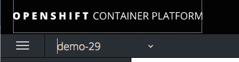
click "Create Project".

Fill in the Name and Display Name of the project as "cicd-YOUR# " and click "Create"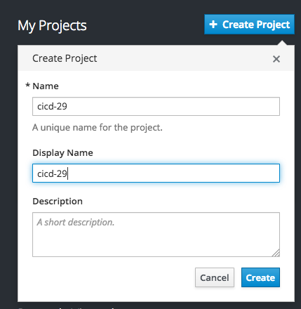
Use the cicd-YOUR# project
$ oc project cicd-YOUR#
Instantiate a Jenkins server in your project
$ oc new-app jenkins-ephemeral
Click "Add to Project", select "Browse Catalog" tab and search on "jenkins". Then select "Jenkins (Ephemeral)".
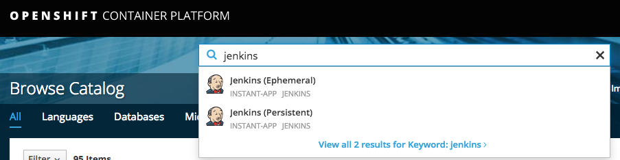

Select Next
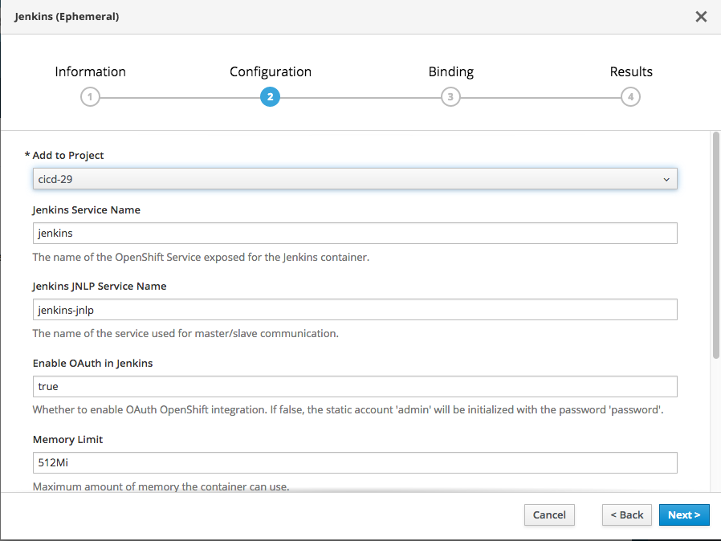
Select the Project cicd-YOUR# from "Add to Project"
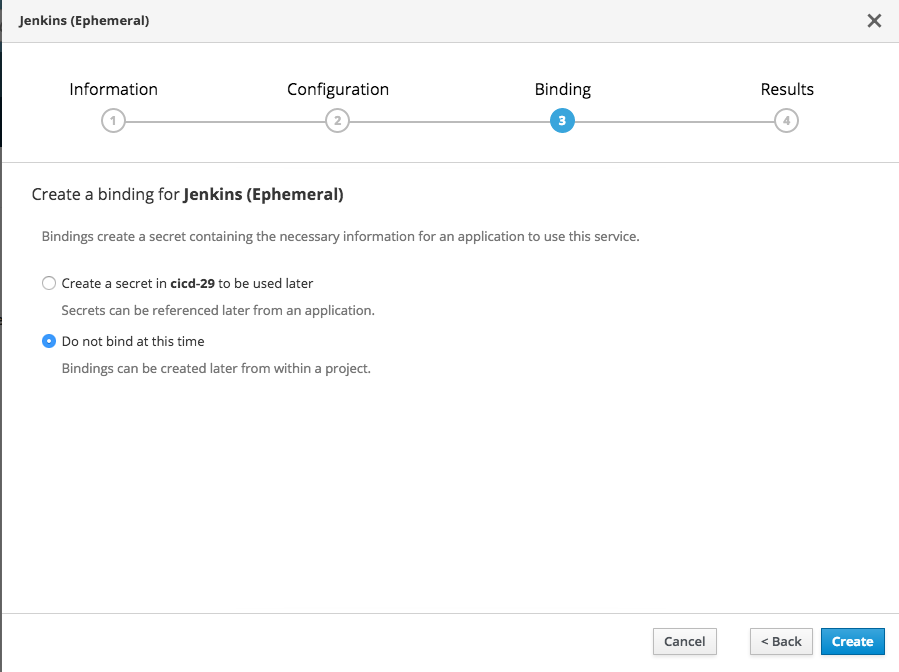
Select the Create
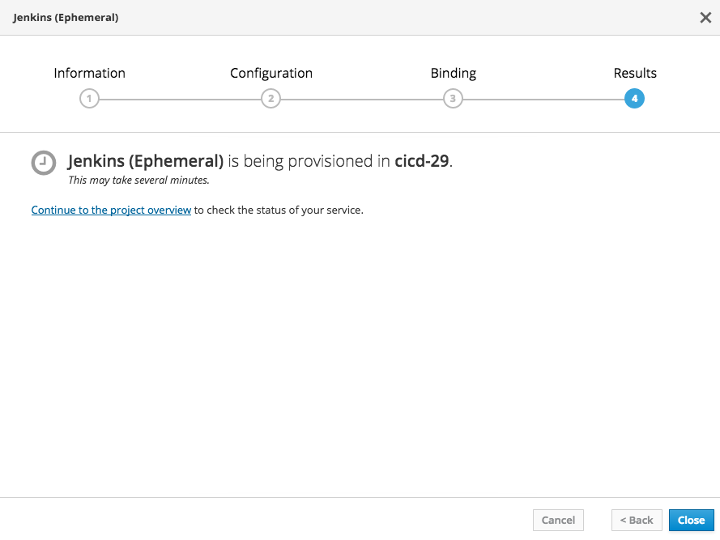
Click the "Continue to the project overview" link
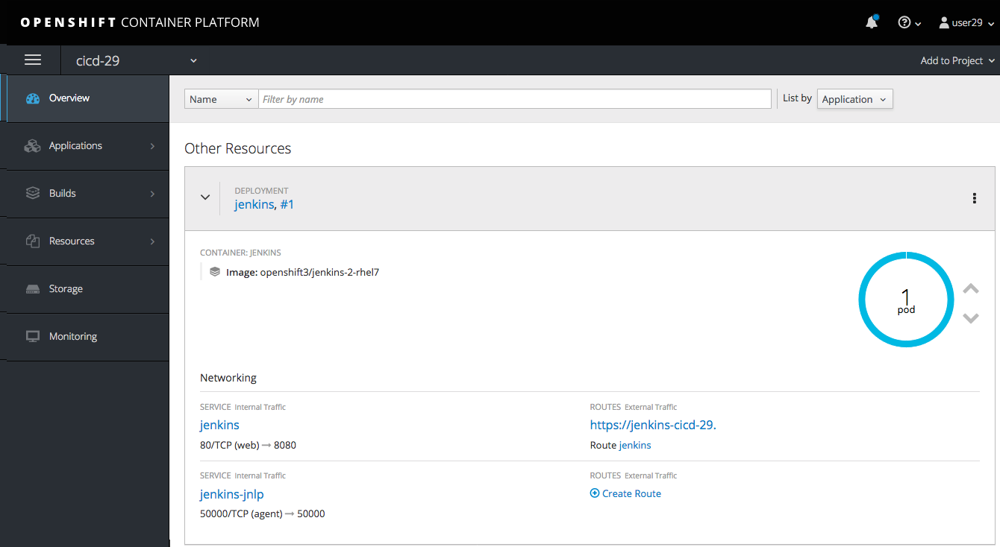
Create a sample application configuration
Use the "oc new-app" command to create a simple nodejs application from a template file:
$ oc new-app -f https://raw.githubusercontent.com/openshift/origin/master/examples/jenkins/application-template.json
Click on "Overview" within the OpenShift console to display the sample application configuration
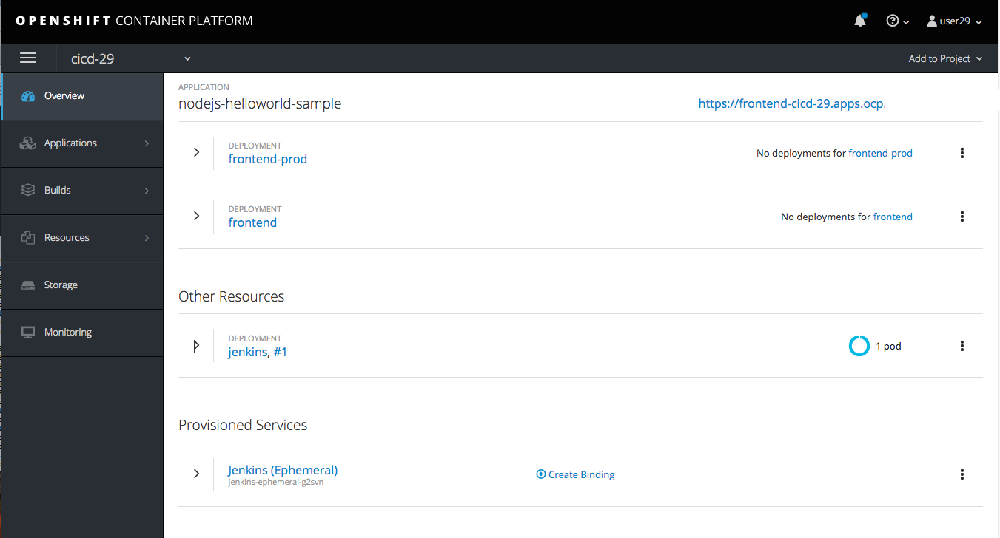
Confirm you can access Jenkins
Get the route to the Jenkins server. Your HOST/PORT values will differ from the example below.
$ oc get route
NAME HOST/PORT PATH SERVICES PORT TERMINATION WILDCARD
frontend frontend-cicd.192.168.42.27.xip.io frontend <all> edge None
jenkins jenkins-cicd.192.168.42.27.xip.io jenkins <all> edge/Redirect None
Use Jenkins HOST/PORT to access through web browser
Click the URL that is listed in the jenkins header
Select "Login with OpenShift" from Jenkins login page

The OpenShift login page is displayed in a new browser tab.
Login with your OpenShift user name and password

Once logged in, click the [Allow selected permissions] button and you should see the Jenkins dashboard.
Create a Jenkins pipeline using OpenShift
We will be creating the following very simple (4) stage Jenkins pipeline.
- Build the application from source.
- Deploy the test version of the application.
- Submit for approval, then tag the image for production, otherwise abort.
- Scale the application.
The first step is to create a build configuration that is based on a Jenkins pipeline strategy. The pipeline is written in the GROOVY language using a Jenkins file format.
Use the OpenShift CLI or Web Console to create an OpenShift build configuration object.
Copy and paste the following into bash.
oc create -f - <<EOF
kind: "BuildConfig"
apiVersion: "v1"
metadata:
name: "pipeline"
spec:
strategy:
jenkinsPipelineStrategy:
jenkinsfile: |-
node() {
stage 'buildFrontEnd'
openshiftBuild(buildConfig: 'frontend', showBuildLogs: 'true')
stage 'deployFrontEnd'
openshiftDeploy(deploymentConfig: 'frontend')
stage "promoteToProd"
input message: 'Promote to production ?', ok: '\'Yes\''
openshiftTag(sourceStream: 'origin-nodejs-sample', sourceTag: 'latest', destinationStream: 'origin-nodejs-sample', destinationTag: 'prod')
stage 'scaleUp'
openshiftScale(deploymentConfig: 'frontend-prod',replicaCount: '2')
}
EOF
Expected output:
buildconfig "pipeline" created
Use the following OpenShift build configuration to create the pipeline.
kind: "BuildConfig"
apiVersion: "v1"
metadata:
name: "pipeline"
spec:
strategy:
jenkinsPipelineStrategy:
jenkinsfile: |-
node() {
stage 'buildFrontEnd'
openshiftBuild(buildConfig: 'frontend', showBuildLogs: 'true')
stage 'deployFrontEnd'
openshiftDeploy(deploymentConfig: 'frontend')
stage "promoteToProd"
input message: 'Promote to production ?', ok: '\'Yes\''
openshiftTag(sourceStream: 'origin-nodejs-sample', sourceTag: 'latest', destinationStream: 'origin-nodejs-sample', destinationTag: 'prod')
stage 'scaleUp'
openshiftScale(deploymentConfig: 'frontend-prod',replicaCount: '2')
}
Choose Add to project -> Import YAML
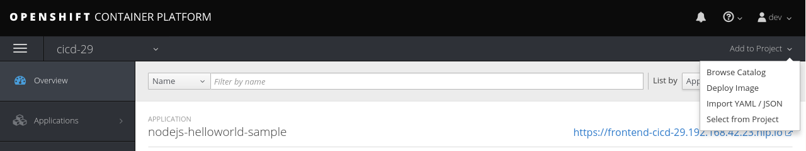
Then copy and paste the above build configuration definition and choose "Create".
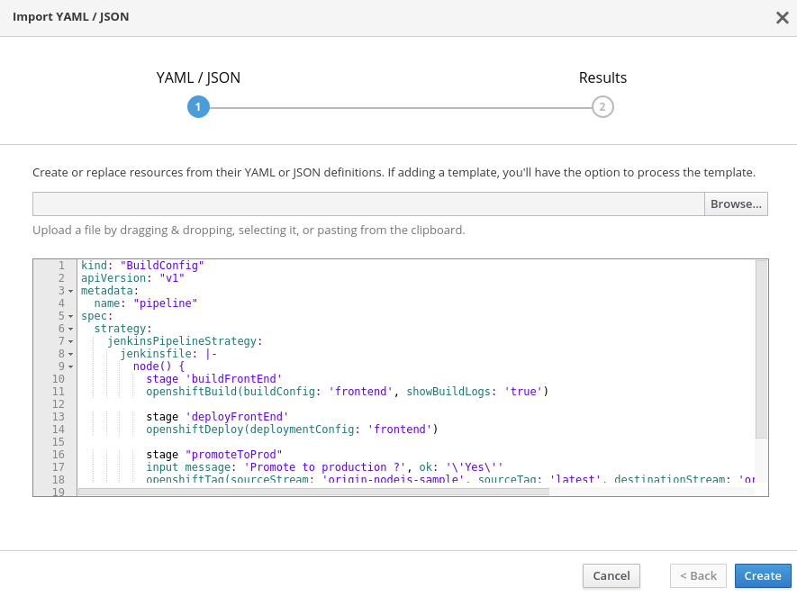
Start the pipeline
Using the OpenShift Web Console, choose Builds -> Pipelines

When the pipeline starts, OpenShift uploads the pipeline to the Jenkins server for execution. As it runs, the various stages trigger OpenShift to build and deploy the frontend microservice. After a Jenkins user approves the frontend deployment, Jenkins triggers OpenShift to tag the image stream with the ":prod" tag then scales the frontend-prod deployment for (2) replicas.
The Jenkins dashboard should indicate that a new build is executing.

Back in the OpenShift Web Console, watch the pipeline execute. Once the "deployFrontEnd" stage completes, you should be able to visit the route for the frontend service in a web browser.
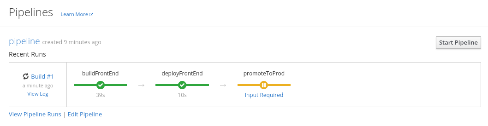
Click on "Input Required" and you should get redirected to the Jenkins Web Console to approve the promotion to production.
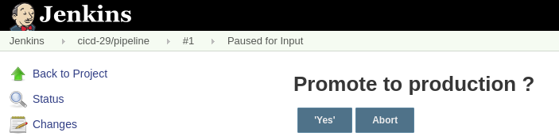
Now return to the OpenShift Web Console and watch the pipeline finish.

Confirm the frontend-prod has deployed 2 pods.
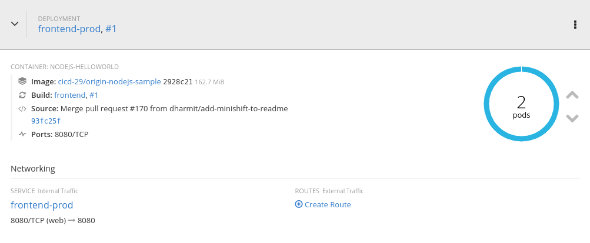
Now create a secure route with TLS edge termination the frontend-prod service so the application can be visited.
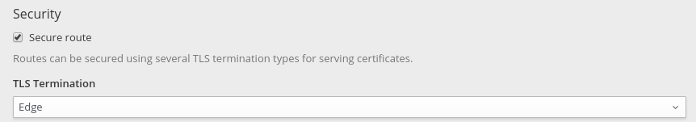
Confirm both the test and production services are available
Browse to both services
Use the oc get routes command to get the HOST/PORT (URLs) needed to access the frontend and frontend-prod services. Your HOST/PORT values will differ
from the example below.
$ oc get routes
NAME HOST/PORT PATH SERVICES PORT TERMINATION WILDCARD
frontend frontend-cicd-XX.apps.eadgbe.net frontend <all> edge None
frontend-prod frontend-prod-cicd-XX.apps.eadgbe.net frontend-prod web edge None
Use a web browser to visit the HOST/PORT (URLs) for the frontend and frontend-prod services. Don't forget the https:// prefix.
Select services' links from Overview page.
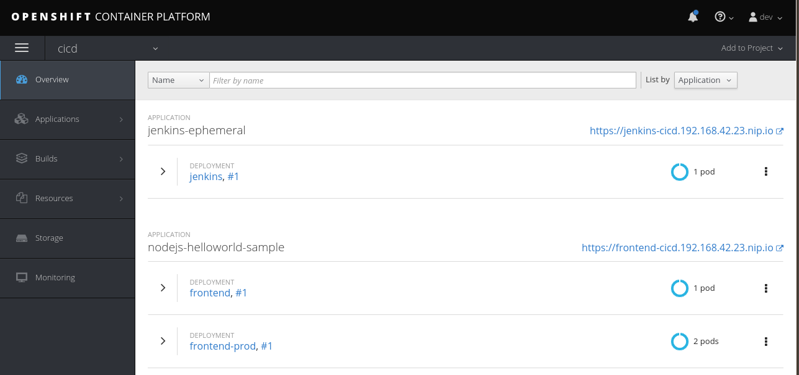
Service web page displayed:

Edit the pipeline.
Now make a change to the pipeline. For example, in the scaleUp stage, change the number of replicas to 3.
Technically speaking, a rebuild from source is not needed to scale up a deployment. We use this simple example to illustrate how a pipeline may be edited within OpenShift.
If you are comfortable using the vi editor:
oc edit bc/pipeline
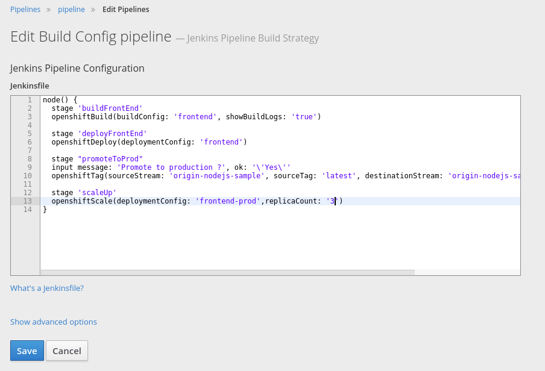
Save your changes and run the pipeline again to confirm the frontend-prod deployment has deployed 3 pods.
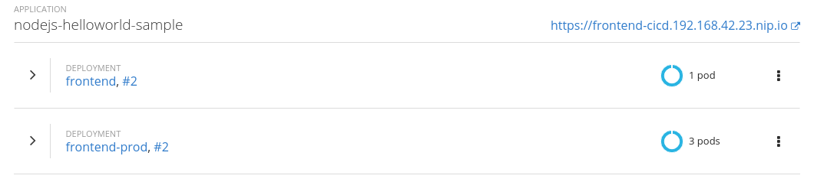
Summary
In this lab you have very quickly and easily constructed a basic Build/Test/Deploy pipeline. Although our example was very basic it introduces you to a powerful DevOps feature of OpenShift through the leveraging of Jenkins. This can be extended to support complex real-world continuous delivery requirements. Read more about the use of Jenkins on OpenShift here and more about Jenkins here.
Workshop Details
| Domain |

|
|
| Workshop | ||
| Student ID |